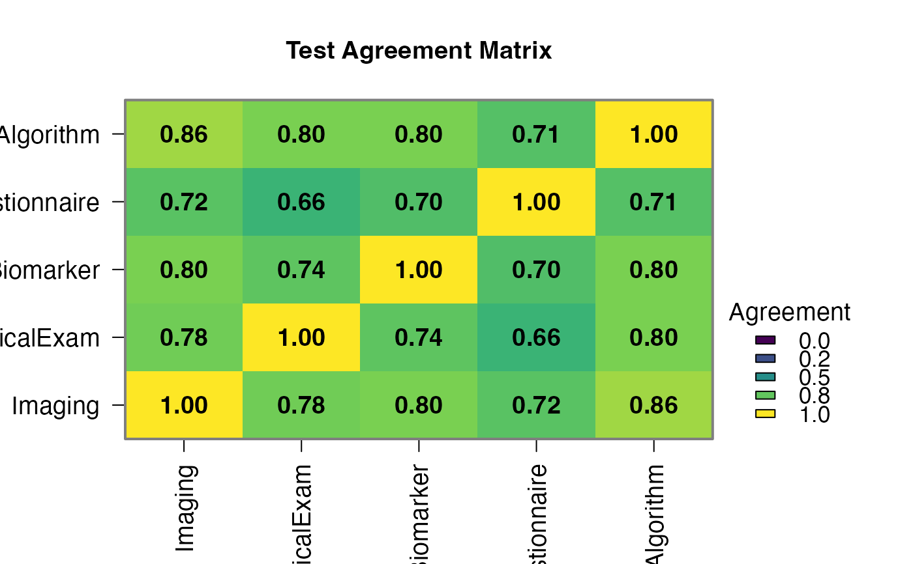
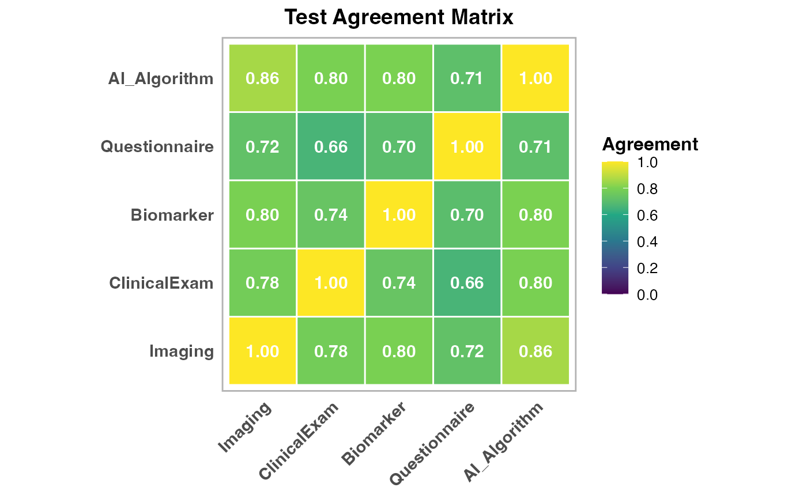

nogoldstandard Screening Data - Five-Test Panel
Source:R/data_nogoldstandard_docs.R
nogoldstandard_screening.RdComprehensive five-test screening dataset with 250 patients. Tests include imaging, clinical exam, biomarker, questionnaire, and AI algorithm with varying characteristics (Sens: 0.82-0.60, Spec: 0.92-0.75).
Format
A data frame with 250 rows and 8 variables:
- patient_id
Character: Patient identifier (PT001-PT250)
- Imaging
Factor: Imaging result ("Normal", "Abnormal"), Sens=0.82, Spec=0.90
- ClinicalExam
Factor: Clinical exam ("Normal", "Abnormal"), Sens=0.65, Spec=0.85
- Biomarker
Factor: Biomarker test ("Normal", "Abnormal"), Sens=0.70, Spec=0.88
- Questionnaire
Factor: Risk questionnaire ("Negative", "Positive"), Sens=0.60, Spec=0.75
- AI_Algorithm
Factor: AI prediction ("Negative", "Positive"), Sens=0.88, Spec=0.92
- age
Numeric: Patient age in years (mean 58, SD 15)
- screening_round
Numeric: Screening round number (1-5)
Details
Simulated with 15% disease prevalence (screening setting). Five tests with diverse characteristics demonstrate comprehensive evaluation methods.
Examples
data(nogoldstandard_screening)
nogoldstandard(data = nogoldstandard_screening,
test1 = "Imaging", test1Positive = "Abnormal",
test2 = "ClinicalExam", test2Positive = "Abnormal",
test3 = "Biomarker", test3Positive = "Abnormal",
test4 = "Questionnaire", test4Positive = "Positive",
test5 = "AI_Algorithm", test5Positive = "Positive",
clinicalPreset = "screening_evaluation")
#>
#> ANALYSIS WITHOUT GOLD STANDARD
#>
#> Agreement Statistics (Cohen's Kappa)
#> ────────────────────────────────────────────────────────────────────────
#> Test Pair Kappa p-value Agreement
#> ────────────────────────────────────────────────────────────────────────
#> Imaging vs ClinicalExam 0.3750000 0.0000003 77.60000
#> Imaging vs Biomarker 0.3672457 0.0000034 79.60000
#> Imaging vs Questionnaire 0.0000000 NaN 0.00000
#> Imaging vs AI_Algorithm 0.0000000 NaN 0.00000
#> ClinicalExam vs Biomarker 0.2783551 0.0003003 74.00000
#> ClinicalExam vs Questionnaire 0.0000000 NaN 0.00000
#> ClinicalExam vs AI_Algorithm 0.0000000 NaN 0.00000
#> Biomarker vs Questionnaire 0.0000000 NaN 0.00000
#> Biomarker vs AI_Algorithm 0.0000000 NaN 0.00000
#> Questionnaire vs AI_Algorithm 0.2058590 0.0091408 71.20000
#> ────────────────────────────────────────────────────────────────────────
#>
#>
#> <div class='clinical-summary' style='background: #f0f8ff; padding:
#> 15px; border-radius: 8px; margin: 10px 0;'><h4 style='color: #1565c0;
#> margin-top: 0;'>📋 Clinical Summary
#>
#> Analysis: No gold standard analysis using all_positive method
#>
#> Tests analyzed: Imaging, ClinicalExam, Biomarker, Questionnaire,
#> AI_Algorithm (N=5)
#>
#> Disease prevalence: 4.4%
#>
#> Test sensitivities: Range from 100.0% to 100.0%
#>
#> Clinical interpretation: Low prevalence setting - high NPV expected,
#> focus on ruling out disease
#>
#> <div style='background: #f8f9fa; padding: 20px; border-radius: 8px;
#> margin: 15px 0; border-left: 4px solid #007bff;'><h3 style='color:
#> #007bff; margin-top: 0;'>📖 Method Selection Guide
#>
#> <div style='margin: 15px 0; padding: 15px; background: #e8f5e8;
#> border-radius: 5px;'><h4 style='color: #2e7d32; margin-top: 0;'>🏆
#> Latent Class Analysis (Recommended)
#>
#> Description: Most robust method using mixture models. Estimates
#> disease prevalence and test parameters simultaneously.
#>
#> Best for: Diagnostic validation studies with 3+ tests and N≥100
#>
#> Strengths: Handles conditional dependence, provides model fit
#> statistics, most statistically rigorous
#>
#> <div style='margin: 15px 0; padding: 15px; background: #e3f2fd;
#> border-radius: 5px;'><h4 style='color: #1565c0; margin-top: 0;'>📊
#> Bayesian Analysis
#>
#> Description: Incorporates prior knowledge about test performance using
#> Bayesian methods.
#>
#> Best for: Studies where you have prior information about expected
#> sensitivity/specificity
#>
#> Strengths: Uses prior knowledge, handles uncertainty well, good for
#> smaller samples
#>
#> <div style='margin: 15px 0; padding: 15px; background: #fff3e0;
#> border-radius: 5px;'><h4 style='color: #ef6c00; margin-top: 0;'>🗳️
#> Composite Reference
#>
#> Description: Uses majority vote of available tests as pseudo-gold
#> standard.
#>
#> Best for: Inter-rater agreement studies with 3+ tests, exploratory
#> analysis
#>
#> Strengths: Simple and intuitive, requires minimal assumptions, good
#> starting point
#>
#> <div style='margin: 15px 0; padding: 15px; background: #fce4ec;
#> border-radius: 5px;'><h4 style='color: #c2185b; margin-top: 0;'>🔒 All
#> Tests Positive
#>
#> Description: Conservative approach - disease present only if ALL tests
#> are positive.
#>
#> Best for: Highly specific diagnoses where false positives are very
#> costly
#>
#> Strengths: High specificity reference, minimizes false positives
#>
#> <div style='margin: 15px 0; padding: 15px; background: #e8f5e8;
#> border-radius: 5px;'><h4 style='color: #388e3c; margin-top: 0;'>🔓 Any
#> Test Positive
#>
#> Description: Liberal approach - disease present if ANY test is
#> positive.
#>
#> Best for: Population screening scenarios where missing cases is costly
#>
#> Strengths: High sensitivity reference, minimizes false negatives
#>
#> <div style='margin: 15px 0; padding: 10px; background: #fff8e1;
#> border-radius: 5px; border-left: 3px solid #ffb300;'><h4 style='color:
#> #e65100; margin-top: 0;'>💡 Selection Tips
#>
#> Start with Latent Class Analysis for most diagnostic studiesUse
#> Composite Reference for quick exploratory analysisChoose All/Any Tests
#> Positive based on clinical consequences of errorsConsider Bayesian if
#> you have strong prior information
#>
#> Disease Prevalence
#> ───────────────────────────────────────
#> Estimate Lower CI Upper CI
#> ───────────────────────────────────────
#> 4.40000 1.85766 6.94234
#> ───────────────────────────────────────
#>
#>
#> Test Performance Metrics
#> ─────────────────────────────────────────────────────────────────────────────────────────────────────────────────────────────
#> Test Sensitivity Lower CI Upper CI Specificity Lower CI Upper CI PPV NPV
#> ─────────────────────────────────────────────────────────────────────────────────────────────────────────────────────────────
#> Imaging 100.00000 100.00000 100.00000 83.68201 79.10135 88.26266 22.00000 100.00000
#> ClinicalExam 100.00000 100.00000 100.00000 76.98745 71.76985 82.20504 16.66667 100.00000
#> Biomarker 100.00000 100.00000 100.00000 83.26360 78.63620 87.89099 21.56863 100.00000
#> Questionnaire 100.00000 100.00000 100.00000 76.56904 71.31855 81.81953 16.41791 100.00000
#> AI_Algorithm 100.00000 100.00000 100.00000 83.26360 78.63620 87.89099 21.56863 100.00000
#> ─────────────────────────────────────────────────────────────────────────────────────────────────────────────────────────────
#>
#>
#> Test Cross-Tabulation
#> ─────────────────────────────────────────────────────────────────────────────────────────────
#> Test Combination Count Percentage
#> ─────────────────────────────────────────────────────────────────────────────────────────────
#> Imaging-, ClinicalExam-, Biomarker-, Questionnaire-, AI_Algorithm- 108 43.20000
#> Imaging-, ClinicalExam-, Biomarker-, Questionnaire+, AI_Algorithm- 30 12.00000
#> Imaging-, ClinicalExam+, Biomarker-, Questionnaire-, AI_Algorithm- 18 7.20000
#> Imaging-, ClinicalExam-, Biomarker+, Questionnaire-, AI_Algorithm- 13 5.20000
#> Imaging+, ClinicalExam+, Biomarker+, Questionnaire+, AI_Algorithm+ 11 4.40000
#> Imaging+, ClinicalExam-, Biomarker-, Questionnaire-, AI_Algorithm- 8 3.20000
#> Imaging-, ClinicalExam-, Biomarker-, Questionnaire-, AI_Algorithm+ 7 2.80000
#> Imaging-, ClinicalExam+, Biomarker-, Questionnaire+, AI_Algorithm- 5 2.00000
#> Imaging+, ClinicalExam+, Biomarker-, Questionnaire-, AI_Algorithm+ 5 2.00000
#> Imaging-, ClinicalExam-, Biomarker+, Questionnaire+, AI_Algorithm- 4 1.60000
#> Imaging-, ClinicalExam+, Biomarker-, Questionnaire-, AI_Algorithm+ 4 1.60000
#> Imaging+, ClinicalExam+, Biomarker+, Questionnaire-, AI_Algorithm+ 4 1.60000
#> Imaging+, ClinicalExam+, Biomarker-, Questionnaire+, AI_Algorithm+ 4 1.60000
#> Imaging+, ClinicalExam+, Biomarker-, Questionnaire-, AI_Algorithm- 3 1.20000
#> Imaging-, ClinicalExam+, Biomarker+, Questionnaire-, AI_Algorithm- 3 1.20000
#> Imaging+, ClinicalExam-, Biomarker+, Questionnaire-, AI_Algorithm+ 3 1.20000
#> Imaging-, ClinicalExam+, Biomarker+, Questionnaire-, AI_Algorithm+ 3 1.20000
#> Imaging+, ClinicalExam-, Biomarker+, Questionnaire+, AI_Algorithm+ 3 1.20000
#> Imaging+, ClinicalExam+, Biomarker+, Questionnaire-, AI_Algorithm- 2 0.80000
#> Imaging+, ClinicalExam-, Biomarker-, Questionnaire+, AI_Algorithm- 2 0.80000
#> Imaging+, ClinicalExam-, Biomarker-, Questionnaire+, AI_Algorithm+ 2 0.80000
#> Imaging+, ClinicalExam-, Biomarker+, Questionnaire+, AI_Algorithm- 1 0.40000
#> Imaging-, ClinicalExam+, Biomarker+, Questionnaire+, AI_Algorithm- 1 0.40000
#> Imaging+, ClinicalExam+, Biomarker+, Questionnaire+, AI_Algorithm- 1 0.40000
#> Imaging+, ClinicalExam-, Biomarker-, Questionnaire-, AI_Algorithm+ 1 0.40000
#> Imaging-, ClinicalExam-, Biomarker+, Questionnaire-, AI_Algorithm+ 1 0.40000
#> Imaging-, ClinicalExam-, Biomarker-, Questionnaire+, AI_Algorithm+ 1 0.40000
#> Imaging-, ClinicalExam+, Biomarker-, Questionnaire+, AI_Algorithm+ 1 0.40000
#> Imaging-, ClinicalExam+, Biomarker+, Questionnaire+, AI_Algorithm+ 1 0.40000
#> Imaging+, ClinicalExam-, Biomarker+, Questionnaire-, AI_Algorithm- 0 0.00000
#> Imaging+, ClinicalExam+, Biomarker-, Questionnaire+, AI_Algorithm- 0 0.00000
#> Imaging-, ClinicalExam-, Biomarker+, Questionnaire+, AI_Algorithm+ 0 0.00000
#> ─────────────────────────────────────────────────────────────────────────────────────────────
#>

